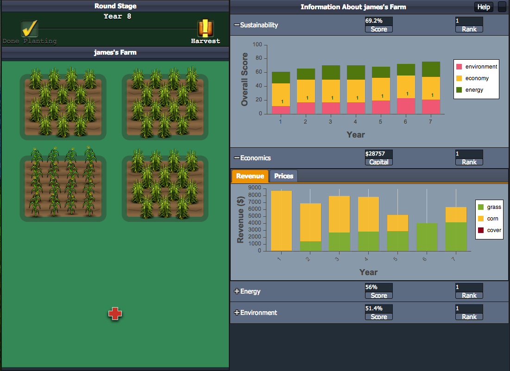

This site provides instructions, supplemental information and classroom resources for Fields of Fuel users. Fields of Fuel is a free, online, multiplayer game designed to allow players to explore the complex sustainability challenges associated with growing bioenergy crops. The game is primarily designed for use in high school and undergraduate environmental studies, ecology, economics and natural resources classes, but the game can be played in a variety of formal and informal settings.

Included here are resources to help you...
Setup a game
Navigate gameplay
Interpret scores and graphs
Learn more about the ecological and economic models running in the background